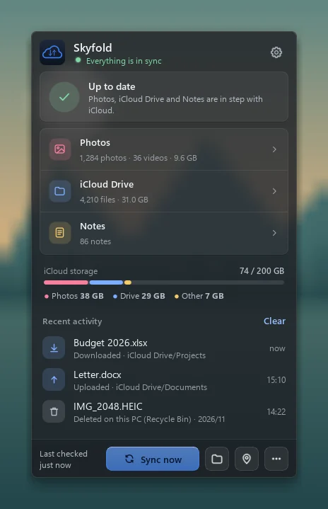
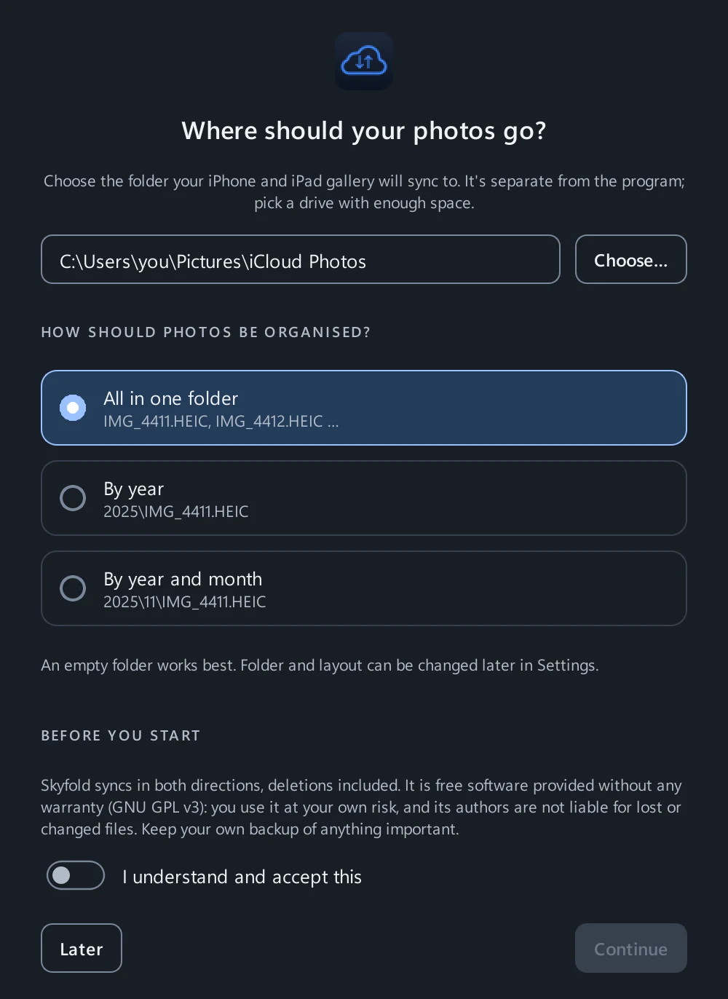
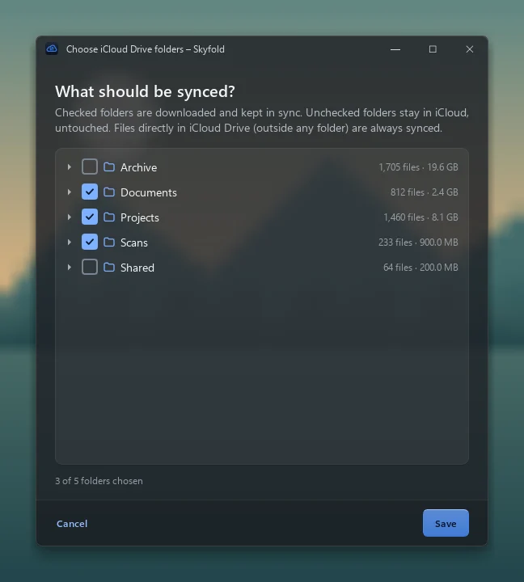
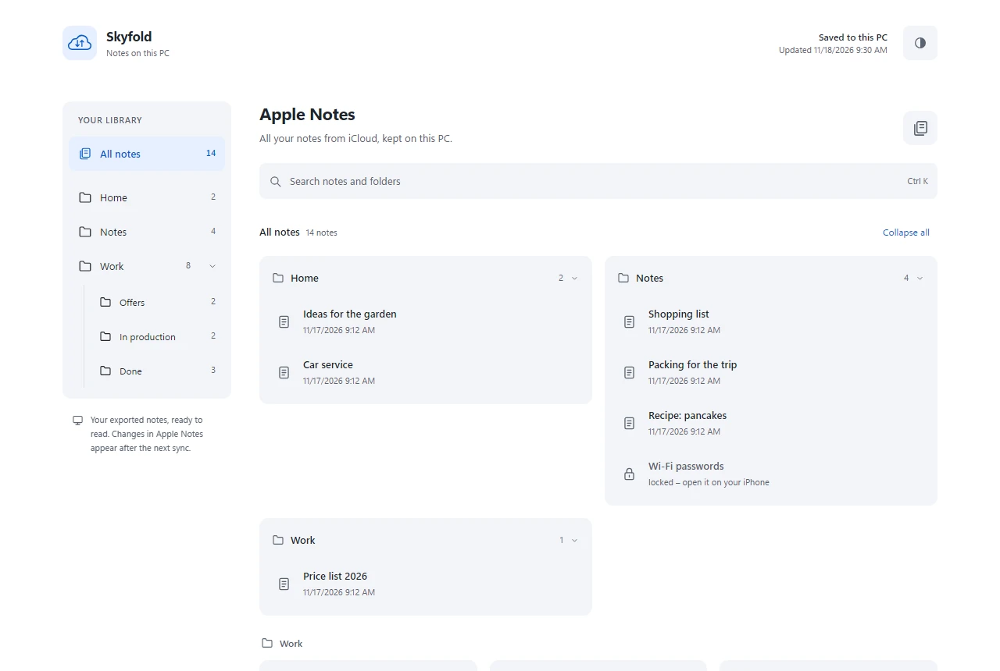
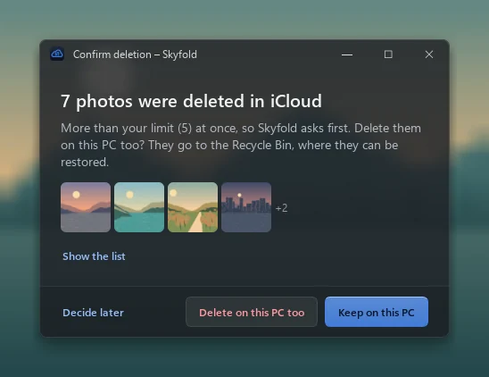

iCloud on Windows, in real folders.
Skyfold keeps iCloud Photos and iCloud Drive in sync with ordinary folders on your PC, and exports your Apple Notes and Safari bookmarks. A small tray app, without iCloud for Windows.
Nothing else to install: no iCloud for Windows, no iTunes, no other Apple software. Portable zip, GPLv3. Not affiliated with Apple.

How it works
Everything lands in a folder you choose.
Real files on disk, always there offline. No online-only placeholders and nothing to open in a special app.
Albums\. Optional uploads from the PC are one-way.Features
iCloud Photos
Your whole photo library, laid out your way.
Skyfold downloads your photos and videos newest first, keeps going in the background, and picks up where it left off after a restart.
- All in one folder, by year, or by year and month. Change it later in Settings.
- Albums as folders that take no extra disk space.
- Delete a downloaded photo on the iPhone and the PC copy goes to the Recycle Bin. Delete it on the PC and it goes to Recently Deleted in iCloud.
- Optional upload, off by default: turn it on to send photos and videos in the folder that Skyfold didn't download, including ones already there. Album folders, hidden files and cloud placeholders are skipped. Sending is one-way: deleting a sent file on one side doesn't delete it on the other.

iCloud Drive
Two-way iCloud Drive, folder by folder.
Sync your whole Drive or only the folders you pick (Mac packages stay in iCloud). Before you turn it on, Skyfold shows how much will be downloaded and how much disk space will be left.
- Renames and moves follow on the other side.
- Conflicts keep both copies: if a file changed on both sides, nothing is overwritten.
- Changes on the PC are noticed within seconds. Changes in iCloud arrive at the next check: Drive is read in full once an hour, or when you click Sync now.
- Uploads show progress, speed and time left.
Shared files: a file you shared on its own and then edit on the PC becomes a new document in iCloud, and the people you shared it with may lose access. Edit such files on an Apple device, or share the folder instead.

Apple Notes
Your notes, as a library you can open anywhere.
Unlocked notes become web pages with their full-size pictures, scans and attachments, in the same folders as in Notes; locked notes are listed by title only. Notes.html lets you search by title and folder, in a light, dark or OLED theme.

And also
The small things, done properly.
Find My
Your devices with battery and last-seen time, a map link, and Play sound.
iCloud storage
How much space Photos, Drive and the rest take, at a glance in the tray.
Updates itself
Shows what's new and updates with one click. Your settings and files stay as they are.
Nothing else to install
Unzip and run. No installer, no Microsoft Store, no iTunes or other Apple software.
You're in control
Limit the download speed, or pause from the tray at any time.
Light, dark or OLED
Follows the Windows theme, or pick one. In English and Bosnian.
Built to be safe
How deletion and recovery work.
Recycle Bin and Recently Deleted
Skyfold doesn't delete permanently. Recover PC files from the Windows Recycle Bin. In iCloud Photos and Drive, check Recently Deleted within 30 days.
Big deletions wait for you
For Photos and iCloud Drive: if more items than your limit (5 by default) disappear at once, Skyfold asks before deleting them on the other side. Notes pages and Safari bookmarks follow iCloud without asking.
An unavailable folder is not a deletion
If your sync folder or its drive is unavailable, Skyfold won't treat that as deleting its contents. Deleting a folder inside your synced Drive does delete it in iCloud.
Public beta. Two-way iCloud Drive sync is new and has been through many rounds of independent review, but it hasn't met every real-world folder yet. Please keep a backup of anything important.

Skyfold or iCloud for Windows?
Apple's app works for many people.
Skyfold is for when it doesn't suit you.
Skyfold is for you if you want
- real files on disk, always available offline
- your own photo layout, with albums as folders
- Apple Notes as browsable, searchable pages
- Safari bookmarks in Firefox, Chrome or Edge
- a portable app with open source code
Keep Apple's app if you need
- passwords and Keychain
- mail, contacts and calendars
- online-only files
- two-way bookmark sync
Privacy
Your password is never stored.
Apple's own sign-in
Your password is only used to sign in, with Apple's sign-in protocol and two-factor authentication.
No Skyfold server
No telemetry, no analytics, no crash reporting. Skyfold talks to Apple, and once a day to GitHub to check for updates (you can turn that off). It opens Google Maps only when you click Map in Find My.
What stays on your PC
Apple's session and the sync database live in %LOCALAPPDATA%\Skyfold, never next to the app. Settings, including your Apple ID email, live in the data folder next to Skyfold.exe, or in %LOCALAPPDATA%\Skyfold\data if that folder is read-only. The log has file names but no password.
Use a PC you trust
Anyone who can read the saved session can reach your iCloud until it expires, like a browser that's still signed in. Settings → General → Sign out deletes it.
Install
Three steps to get going.
Download
Get
Skyfold-windows.zipfrom the latest release. It is built by GitHub Actions from the public source. To check it, runGet-FileHash .\Skyfold-windows.zipin PowerShell and compare the value withSkyfold-windows.zip.sha256.Unzip and run
Unzip to a normal folder and run
Skyfold.exe. Skyfold isn't code-signed, so if SmartScreen says "Windows protected your PC", click More info → Run anyway. On a new Windows 11 PC, Smart App Control may block unsigned apps altogether.Sign in
Choose where your photos should go, then sign in with your Apple ID and the 6-digit code from your iPhone, iPad or Mac (or by SMS). Turn on iCloud Drive, Notes and Safari bookmarks in Settings if you want them.
You need Windows 10 or 11 (64-bit) and an Apple ID with two-factor authentication; hardware security keys and the old two-step verification aren't supported. Access iCloud Data on the Web must be on in your iPhone's iCloud settings; it is on by default unless you use Advanced Data Protection.
FAQ
Questions people ask.
Is this an official Apple app?
No. Skyfold is an independent project and isn't affiliated with Apple.
Why does Windows warn me when I start it?
The exe isn't code-signed (certificates cost money every year). The source and the build are public: the release zip is built by GitHub Actions from the repository.
Why is the first iCloud Drive sync slow?
Apple limits how fast one account can download, to roughly 1 to 2 files per second, no matter how fast your connection is. A Drive with 20,000 files can take several hours. Big files go at your connection's speed, and after the first sync only changes are transferred.
Do I have to sign in again?
About every two months, when Apple's session expires. Skyfold tells you in the tray. Find My is the exception: after every PC restart Apple asks for your password once more before it shows your devices. Syncing keeps working without it.
I deleted something by mistake.
Check the Windows Recycle Bin, or Recently Deleted in Photos or iCloud Drive (on iCloud.com or your iPhone) within 30 days.
What isn't synced?
Photos: shared albums, the iCloud Shared Photo Library and smart albums aren't synced. Hidden photos aren't downloaded, and if you hide a photo Skyfold already downloaded, its PC copy goes to the Recycle Bin. Edited photos come down as originals, edits to a photo that's already synced aren't uploaded, and a Live Photo copied from an iPhone goes up as a still photo.
iCloud Drive: Mac packages such as .app stay in iCloud.
Exports: Notes and Safari bookmarks are one-way, and locked notes are listed by title only.
Messages, contacts, calendars and passwords aren't included.
The full list is in the limitations.
Can I keep my synced folders in OneDrive or Dropbox?
Better not: everything would be uploaded to a second cloud. Skyfold warns you if you pick such a folder. This matters on PCs where Pictures or Documents already live in OneDrive. The app itself can sit there; its session and database stay local.
How do I refresh Safari bookmarks in my browser?
Skyfold keeps Safari Bookmarks.html up to date, but a browser copies the bookmarks when you import them. Importing again adds a second Safari Bookmarks folder, so delete the old one first.
Can I use it on two PCs?
Yes, each PC has its own session and sync database. One Apple ID per Windows user.
Is it free?
Yes, and it will stay free. Skyfold is open source under the GNU GPL v3.
Give Skyfold a try.
Free and open source. If something doesn't work, a bug report on GitHub helps the most.